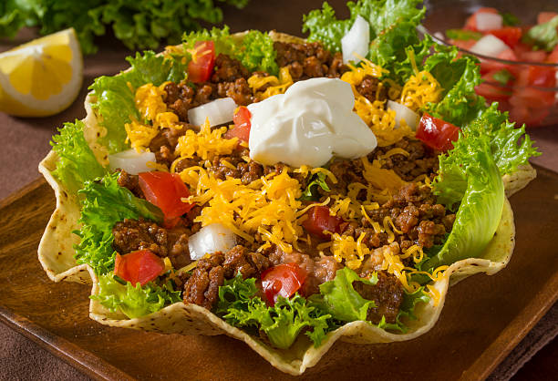

Home
Chicken And Dumplings

Delicious Taco Salad
This taco salad contains traditional ingredients such as lettuce, tomatoes, beans, ground beef and corn chips. Serve this salad on a hot summer day.
Ingredients:
- 16 ounces lean ground beef
- 1 (1.25 ounce) package taco seasoning mix
- 1 head iceberg lettuce, shredded
- 1 red onion, sliced
- 1 bunch green onions, chopped
- 1 (15 ounce) can pinto beans, drained
- 1 (15 ounce) can kidney beans, drained
- 2 large tomatoes, chopped
- 1 avocados - peeled, pitted, and cubed
- 8 ounces shredded Cheddar cheese
- 1 (16 ounce) package corn chips
Steps:
- Prepare the ground beef as directed by taco seasoning package and set aside.
- In a large bowl, combine the beef mixture, lettuce, red onion, green onion, pinto beans, kidney beans, tomatoes, avocado and cheese. Mix well.
- Before serving, add the corn chips and enough dressing to coat. Mix well and serve immediately.